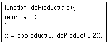
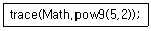

멀티미디어콘텐츠제작전문가(구) (2011-03-20 기출문제)
1과목: 멀티미디어개론
1. 웹서비스 제공자가 해당 웹서비스의 정보를 등록하고, 사용자는 원하는 웹서비스를 검색하여 정보를 얻도록 하는 웹서비스 레지스트리(Registry)에 관한 표준은?
- UDDI(Universal Description, Discovery, and Integration)
- SOAP(Simple Object Access Protocol)
- WSD(Web Services for Devices)
- XML(eXtensible markup language)
(정답률: 알수없음)

2. 다음 IPv6에 대한 설명으로 거리가 가장 먼 내용은?
- IPV6는 유니캐스트, 애니캐스트, 멀티캐스트를 정의한다.
- 주소는 하나의 콜론으로 분리된 각 2개의 16지수로 구성된다.
- 각기 다른 대역폭에서도 비디오 데이터의 처리가 무리 없이 이루어지도록 대역폭을 확보할 수 있게 지원한다.
- 보안과 관련하여 안전한 통신, 메시지의 확인, 암호화 기능 등을 제공한다.
(정답률: 알수없음)
3. 다음 중 통신 프로토콜의 기능이 아닌 것은?
- 병합제어
- 에러제어
- 흐름제어
- 연결제어
(정답률: 알수없음)
4. OSI 7계층에서 전달 계층의 기능에 해당되지 않는 것은?
- 종단대 종단에 대해 흐름제어와 오류제어 수행
- 응용 프로세스 간의 대화 단위 및 대화방식 결정
- 연결제어 수행
- 메시지의 분할과 재조립
(정답률: 알수없음)
5. 근거리 무선 통신 규격(IEEE802.15.4)을 기반으로 하여 블루투스의 저속 버전이라고도 불리며, 저소비 전력과 저비용의 장점을 가지고 있는 무선통신기술은?
- RFID
- Wi-Fi
- WLAN
- ZigBee
(정답률: 알수없음)
6. 다음의 LAN 관련 프로토콜 중 무선 LAN(Wireless LAN)에 대한 프로토콜은 무엇인가?
- IEEE 802.9
- IEEE 802.10
- IEEE 802.11
- IEEE 802.12
(정답률: 알수없음)
7. 다음 중 IP 주소를 MAC 주소로 변환시켜주는 프로토콜은?
- FTP
- ARP
- SMTP
- UDP
(정답률: 알수없음)
8. 다음 중 MPEG에 관한 설명으로 틀린 것은?
- MPEG-1은 해상도를 4개의 레벨로 나누고 있다.
- MPEG-2는 엔트로피 부호화를 위하여 주로 허프만 코딩과 RLE 방법을 이용한다.
- MPEG-4는 대화형 멀티미디어 서비스에 적합하다.
- MPEG-4는 낮은 전송률로 동영상을 보내는 것을 목표로 개발된 영상 압축 표준이다.
(정답률: 30%)
9. 다음 중 RFID 관련 기술에 대한 설명으로 틀린 것은?
- 리더기는 태그의 정보를 읽거나 기록 할 수 있다.
- 동력에 따라 수동형, 반수동형, 능동형 RFID로 구분 할 수 있다.
- 주파수에 따라 LFID, HFID, UHFID로 구분 할 수 있다.
- 빛을 이용해 바코드를 판독한다.
(정답률: 73%)
10. Nyquist 표본화 주기를 만족하지 않게 표본화함으로써 주파수 영역에서 스펙트럼이 겹쳐지게 되어 신호가 왜곡되는 현상은?
- 절단오차
- 압축에러
- 반올림 오차
- 엘리어싱 에러
(정답률: 알수없음)
11. 다음 중 양자화를 가장 잘 표현한 것은?
- 샘플링된 신호를 디지털 양으로 표시
- 샘플링 주파수의 선정
- 디지털 신호의 아날로그화
- 전송신호의 위상
(정답률: 90%)
12. 세션 하이재킹을 탐지하는 방법이 아닌 것은?
- 비동기화 상태 탐지
- ACK Storm 탐지
- 계속되는 DNS 패킷 탐지
- 패킷의 유실 및 재전송 증가 탐지
(정답률: 알수없음)
13. SOP/XML 등 SW 통신프로토콜을 이용해 브라우저의 화면구성에 필요한 서비스만을 서버에 호출하여 그 결과를 화면에 출력하는 기술로, 시스템과 네트워크의 부하를 줄일 수 있는 Web 2.0에 적용되는 핵심기술은?
- AJAX
- VRML
- DHTML
- Widget
(정답률: 알수없음)
14. 하이퍼텍스트 문서는 무엇을 통해 링크되는가?
- DNS
- TELNET
- 포인터
- 홈페이지
(정답률: 알수없음)
15. 스캔(Scan)은 서비스를 제공하는 서버의 작동 여부와 제공하는 서비스를 확인하기 위한 것이다. 다음 중 TCP를 이용한 스캔이 아닌 것은?
- TCP 단편화 스캔
- TCP Half Open 스캔
- TCP Port 스캔
- TCP Open 스캔
(정답률: 알수없음)
16. 이동 통신에서 이동체의 움직임에 따라 수신 신호의 주파수가 변하는 형식은?
- 지역채널 확산 현상
- 음영 현상
- 채널 간섭 현상
- 도플러 효과
(정답률: 70%)
17. 음향 신호를 전송하거나 녹음할 때 최강음과 최약음의 비를 [db]로 나타낸 것은?
- S/N 비
- 다이나믹레인지
- SPL
- 정재파비
(정답률: 70%)
18. 다음 중 텔레비전의 3요소와 거리가 가장 먼 것은?
- 편향
- 화소
- 주사
- 동기
(정답률: 46%)
19. 음성의 디지털 부호화 기술이 아닌 것은?
- 파형 부호화 방식
- 보코딩 방식
- 압축 부호화 방식
- 혼합 부호화 방식
(정답률: 알수없음)
20. 다음 중 웨이블렛 변환과 가장 관계있는 표준은?
- H.263
- MPEG-7
- JPEG
- JPEG2000
(정답률: 80%)
21. 다음 중 H.263의 구성 요소에 해당하지 않은 것은?
- TOLL Switch
- Terminal
- GateKeeper
- MCU
(정답률: 알수없음)
22. 오디오 콘솔의 기능 중 어떤 임계치 이상의 진폭에 대해 설정한 비율로 진폭을 억제하는 것은?
- compressor
- preamplifier
- noise gate
- fader
(정답률: 70%)
23. 초당 발생한 신호의 변화 상태를 나타내는 변조 속도의 기본 단위는?
- Baud
- Bit
- Packet
- Cell
(정답률: 알수없음)
24. 리눅스의 프로세스 상태 중 프로세스가 정지된 상태지만, 그 정보가 삭제되지 않고, 메모리에 남아있는 상태는?
- 좀비
- 실행
- 대기
- 중단
(정답률: 알수없음)
25. 저작권 보호 또는 문서의 증빙을 위해 문서 또는 파일에 특별한 인식 표시를 하는 기술은?
- PGP
- S/MIME
- Watermark
- PEM
(정답률: 알수없음)
2과목: 멀티미디어기획및디자인
26. 디자인의 원리가 아닌 것은?
- 조화
- 이미지
- 강조
- 리듬
(정답률: 알수없음)
27. 디자인의 요소가 아닌 것은?
- 형태
- 재료
- 색
- 질감
(정답률: 64%)
28. 인간생활의 질적 수준을 향상시키기 위하여 형식미와 기능 그 자체와 유기적으로 결합된 형태, 색채, 아름다움을 나타내는 것은?
- 독창성
- 경제성
- 심미성
- 문화성
(정답률: 알수없음)
29. 비례의 3가지 유형이 아닌 것은?
- 가하학적 비례
- 산술적 비례
- 조화적 비례
- 구조적 비례
(정답률: 알수없음)
30. 조형적 디자인 요소에서 형태를 이루는 요소가 아닌 것은?
- 점
- 위치
- 선
- 면
(정답률: 64%)
31. 시지각의 기본법칙이 아닌 것은?
- 접근성
- 유사성
- 용이성
- 폐쇄성
(정답률: 70%)
32. 둘 이상의 색을 시간적인 차이를 두고서 차례로 볼 때 주로 일어나는 색채대비는?
- 동시대비
- 동시대비
- 계시대비
- 동화대비
(정답률: 알수없음)
33. 처음 점이 움직임을 시작한 위치에서 끝나는 위치까지의 거리를 가진 점의 궤적은?
- 점
- 면
- 선
- 입체
(정답률: 73%)
34. 색채지각 반응효과에서 명시성(Legibility)에 가장 크게 영향을 미치는 속성은?
- 채도의 차이
- 명도의 차이
- 질감의 차이
- 색상의 차이
(정답률: 알수없음)
35. 보색에 대한 설명으로 가장 거리가 먼 것은?
- 보색을 혼합하면 중간 회색이나 검정이 된다.
- 보색이 인접하면 채도가 서로 낮아 보인다.
- 인간의 눈은 스스로 평형을 유지하기 위해 보색잔상을 일으킨다.
- 유채색과 나란히 놓인 회색은 유책색의 보색기미를 띈다.
(정답률: 알수없음)
36. RGB 시스템에 관한 설명으로 가장 거리가 먼 것은?
- RGB 세 요소의 값이 모두 255인 경우 검은 색이 된다.
- 각각 세 개의 컬러가 별도로 작용하여 색을 표현하는 방법이다.
- RGB 각각 8비트 색채인 경우 0~255까지의 값이 266단계를 갖는다.
- 디지털 색채 시스템 중 가장 안정적이며 널리 쓰인다.
(정답률: 70%)
37. 어떤 색채가 매체, 주변색, 광원, 조도 등이 서로 다른 환경에서 관찰될 때, 다르게 보여지는 현상은?
- Device Calibration
- Color Appearance
- ICM File
- Color Gamut Mapping
(정답률: 알수없음)
38. 편집디자인과 거리가 가장 먼 것은?
- POP디자인
- 공공디자인
- 일러스트레이션
- 타이포그라피
(정답률: 알수없음)
39. 2차원에서 모든 방향으로 펼쳐진 무한히 넓은 영역을 의미하며 형태를 생성하는 요소로서의 기능을 가진 것은?
- 점
- 선
- 면
- 공간
(정답률: 알수없음)
40. 감산 혼합에 대한 설명으로 거리가 먼 것은?
- 잉크젯 프린터기에서 색상을 표현하는 원리와 같다.
- 빛의 성징을 이용하여 컬러를 표현하는 컬러 모델이다.
- 기본 3원색은 혼합하면 검은색이 된다.
- 기본 3원색은 Yellow, Magenta, Cyan이다.
(정답률: 알수없음)
41. 잔상의 크기는 투사면까지의 거리에 영향을 받게 되며 거리에 정비례하여 증감하거나 감소하는 것은?
- 임베르트 법칙의 잔상
- 푸르킨예의 잔상
- 헤링의 잔상
- 비드웰의 잔상
(정답률: 알수없음)
42. 다음 중 색조에 대한 설명으로 맞는 것은?
- 색채 이미지 전달이 어렵다.
- 색채의 복합속성이 아니다.
- 색상과 채도의 복합개념이다.
- 명도와 채도의 복합개념이다.
(정답률: 알수없음)
43. CLE Lab 표색계에 대한 설명으로 거리가 먼 것은?
- a* 와 b* 는 색 방향을 나타낸다.
- a* 는 red-green 축에 관계된다.
- L* =50은 gray이다.
- b*는 밝기의 척도이다.
(정답률: 알수없음)
44. 먼셀 기호 “5R/8/3”이 나타내는 의미는?
- 색상 5R, 채도 8, 명도 3
- 색상 5R, 명도 8, 채도 3
- 색상 3R, 명도 8, 채도 5
- 색상 5R, 채도 11, 명도3
(정답률: 알수없음)
45. 먼셀 색채계의 색상환에서 서로 마주보고 있는 색으로 배색했을 때 어떤 효과를 볼 수 있는가?
- 명도대비
- 채도대비
- 보색대비
- 색도대비
(정답률: 알수없음)
46. 색을 직접 섞지 않고 색점을 배열함으로써 혼색된 것처럼 중간색이 보이는 효과는?
- 비렌 효과
- 베졸드 효과
- 헬름홀츠 효과
- 푸르킨예 효과
(정답률: 알수없음)
47. 다음 중 타이포그래피의 속성이 아닌 것은?
- 균형
- 비례
- 컬러
- 조화
(정답률: 59%)
48. 다음 중 촉각적 질감(Texture)과 거리가 먼 것은?
- 거칠다
- 부드럽다
- 매끄럽다
- 아름답다
(정답률: 알수없음)
49. 공통요소가 연속적으로 되풀이 되는 리듬(Rhythm)의 변화에 속하지 않는 것은?
- 반복
- 대칭
- 점이
- 움직임
(정답률: 알수없음)
50. 형태 구성의 부분 간의 상호관계에 있어 반복, 연속되어 생명감과 존재감을 나타내는 디자인 원리는?
- 조화
- 리듬
- 균형
- 비례
(정답률: 알수없음)
3과목: 멀티미디어저작
51. 다음 중 DBMS의 구성 요소로 가장 거리가 먼 것은?
- DDL컴파일러
- 질의어 컴파일러
- 예비 컴파일러
- DBA
(정답률: 알수없음)
52. DBMS에서 검색이나 갱신과 같은 데이터베이스 연산을 저장 데이터 관리자를 통해 디스크에 저장된 데이터베이스를 실행하는 구성 요소는?
- DDL 컴파일러
- 예비처리기
- 질의어 처리기
- 런타임 데이터베이스 처리기
(정답률: 알수없음)
53. DBMS에서 릴레이션, 애트리뷰트, 인덱스, 데이터베이스 사용자 등에 관한 정보가 저장되는 곳은?
- 데이터사전
- 트랜잭션
- ER다이어그램
- 응용프로그램
(정답률: 50%)
54. 다음 데이터베이스 뷰(View)의 장점 중 가장 거리가 먼 것은?
- 데이터 접근 제어로 보안 제공
- 독자적으로 인덱스를 가질 수 있음
- 사용자의 데이터 관리의 편리 제공
- 논리적으로 독립성을 제공
(정답률: 알수없음)
55. SQL의 Select문에서 검색 조건을 지정하는 절은?
- ORDER BY
- FROM
- WHERE
- GROUP BY
(정답률: 64%)
56. 다음 중 액션스크립트 3.0에서 창의 크기를 풀스크린으로 만들기 위해 사용하는 용도는?
- stage.displayState=StageDisplayState.FULL_SCREN;
- stage.displayState=StageDisplayState.FULL;
- displayState.stage=Display.FULL_SCREEN
- displayState.stage=StageDisplayState.FULL_SCREEN;
(정답률: 알수없음)
57. 다음 중 액션스크립트3.0에서 URLLoader의 데이터포맷으로 거리가 가장 먼 것은?
- URLLoaderDataFormat.TEXT
- URLLoaderDataFormat.STRINGS
- URLLoaderDataFormat.BINARY
- URLLoaderDataFormat.VARIABLES
(정답률: 알수없음)
58. 다음 중 액션스크립트 3.0에서 인수에 DisplayObject 객체를 넣고, DisplayObject와 닿았는지를 체크해서 참/거짓을 변환하는 기능을 가지고 있는 메소드는?
- hitTestObject( )
- getURL( )
- getBounds( )
- loadMovie( )
(정답률: 알수없음)
59. 다음 액션스크립트를 실행할 경우 x의 값은?

- 5
- 6
- return a*b
- 30
(정답률: 알수없음)
60. 다음의 액션스크립트에 대한 연산 결과 값으로 맞는 것은?

- 5
- 2
- 10
- 25
(정답률: 42%)
61. 플래시(CS4)에서 New Symbol 타입이 아닌 것은?
- 그래픽
- 무비클립
- 버튼
- 타임라인
(정답률: 알수없음)
62. 객체지향 개념 및 언어에 관한 내용 중 틀린 것은?
- 사용자의 중심의 대화식 프로그램 개발에 적합하다.
- C++ 언어에서 객체지향 용어를 처음 소개하였다.
- 대표적인 언어 하나로 Smalltalk를 들 수 있다.
- 객체지향 기술을 통하여, 소프트웨어 위기를 극복하는데 많은 도움이 되었다.
(정답률: 50%)
63. DOM에서 CharacterData 인터페이스가 제공하는 메소드로 틀린 것은?
- getData
- setData
- selectData
- insertData
(정답률: 알수없음)
64. 다음 중 ASP의 Server 객체에서 사용하는 함수로 틀린 것은?
- HTMLEncode( )
- Execute( )
- URLEncode( )
- Session( )
(정답률: 28%)
65. JSP Page Directive의 속성 중 상속할 클래스명을 알려주는 역할을 하는 것은?
- extends
- import
- session
- buffer
(정답률: 알수없음)
66. 다음의 JSP 객체 중에서 해당 웹 페이지가 속해있는 JSP 컨테이너를 나타내는 객체는?
- out
- page
- application
- exception
(정답률: 알수없음)
67. 다음 중 SAX의 4가지 핸들러(Handler)에 포함되지 않는 것은?
- Document Handler
- Error Handler
- Window Handler
- DTD Handler
(정답률: 알수없음)
68. PHP에 대한 설명으로 거리가 가장 먼 것은?
- 프로그램의 시작과 끝은 ＜php＞~＜/php＞로 나타낸다.
- 변수 이름은 대소문자를 구분한다.
- 문자열을 연결할 때 도트(.)를 사용한다.
- 외부에서 들어오는 GET 데이터를 받을 때는 $_GET['변수명']을 사용한다.
(정답률: 60%)
69. XHTML1.0에 대한 설명으로 가장 거리가 먼 것은?
- 엘리먼트와 속성 이름을 대문자로 기술해야 한다.
- 속성 값은 따옴표로 둘러싸야 한다.
- 형식이 갖추어진(Well-Formed)규칙을 따라야 한다.
- 비어있는 엘리먼트라도 종료태그를 붙이거나 명시적으로 끝을 알려 줘야한다.
(정답률: 알수없음)
70. HTML 문서에서 글자 모양 효과를 이탤릭체로 나타내기 위해 사용하는 태그(Tag)는?
- ＜B＞글자모양＜/B＞
- ＜I＞글자모양＜/I＞
- ＜SUB＞글자모양＜/SUB＞
- ＜BLINK＞글자모양＜/BLINK＞
(정답률: 70%)
71. 다음 중 HTML의 ＜TABLE＞ 태그에서 사용할 수 없는 속성은?
- align
- background
- valign
- width
(정답률: 알수없음)
72. 다음 중 자바스크립트의 Boolean 객체 메서드로 맞는 것은?
- toSource( )
- concat( )
- pop( )
- reverse( )
(정답률: 70%)
73. 자바스크립트에서 연산자 우선순위가 가장 높은 것은?
- &&
- ＜
- /
- ==
(정답률: 59%)
74. 자바스크립트에서 Window 객체의 Layer 속성으로 틀린 것은?
- left
- bgcolor
- height
- parentLayer
(정답률: 알수없음)
75. 자바 애플릿에서 삽입된 애플릿에 정보를 전달하기 위해 사용하는 태그는?
- ＜EMBED＞
- ＜INPUT＞
- ＜OUTPUT＞
- ＜PARAM＞
(정답률: 알수없음)
4과목: 멀티미디어제작기술
76. 오디오 기술자 협회와 유럽방송연맹이 공동으로 제정한 디지털 신호 인터페이스 규격으로 프로용 기기에 많이 사용되며, XLR 단자를 사용하는 것은?
- S/PDIF
- S/PDIF-2
- Optical Interface
- AES/EBU
(정답률: 알수없음)
77. 다음 중 오디오와 가장 밀접한 것은?
- SDI(Serial Digital Interface)
- Mixing Console
- Component 신호
- Composite 신호
(정답률: 알수없음)
78. 다음 중 음향 압축 파일의 종류에 속하지 않는 것은?
- ATRAC
- MP3
- TWinVQ
- Dwg
(정답률: 55%)
79. 다음 중 영상미디어의 압축 방식이 아닌 것은?
- 공간적 중복성 압축 방식
- 시간적 중복성 압축 방식
- 고정적 중복성 압축 방식
- 통계적 중복성 압축 방식
(정답률: 알수없음)
80. 선형(Linear) 영상편집 시 산만하게 촬영된 영상 및 음성을 편집대본 순서대로 잘라 붙이는 기본적인 편집기법은?
- 프리롤 편집(Pre roll editing)
- 인서트 편집(Insert editing)
- 어셈블 편집(Assemble editing)
- 페이퍼 편집(Paper editing)
(정답률: 알수없음)
81. 디지털 영상에서 행과 열의 값으로 영상의 한 점을 표시하는 것을 무엇이라 하는가?
- 프레임
- 픽셀(Pixel)
- 블록(Block)
- 필드(Field)
(정답률: 알수없음)
82. 다음 중 한 장의 영상을 뜻하며 영상의 시간적 최소 단위를 나타내는 것은?
- 픽셀
- 해상도
- 프레임
- 데이터
(정답률: 73%)
83. 다음 중 화질의 평가 요소를 구분하는 설명으로 틀린 것은?
- Contrast : 영상신호의 컬러범위
- Resolution : Sharpness
- Hue : 색상
- Brightness : 백그라운드의 밝기
(정답률: 알수없음)
84. 비디오 압축 기술 중 데이터 그 자체가 아닌 데이터의 내용에 대한 표현 방법을 다루는 표준이며, 정보검색을 위한 내용 표현을 목표로 한 압축 기술은?
- MPEG-2
- MPEG-4
- MPEG-7
- MPEG-21
(정답률: 알수없음)
85. 인물의 윤곽을 선명하게 하고, 머리카락에 광택을 주며 배경에서 인물이 떠오르게 하는 조명은?
- 키라이트
- 베이스라이트
- 백라이트
- 필라이트
(정답률: 70%)
86. 영상 압축 기법 중 새로운 화면 정보를 모두 다 기록하지 않고 앞 화면과의 차이만을 기록하는 방식은?
- 동작보상 기법
- 주파수 차원 변환 기법
- 서브샘플링 기법
- 델타프레임 기법
(정답률: 알수없음)
87. 광 파장의 차이에 의한 색채 감각을 나타내는 것으로 색의 종류를 표시하는 것은?
- 명도
- 포화도
- 색상
- 감도
(정답률: 알수없음)
88. 다음 중 조명의 주 목적이 아닌 것은?
- 입체감과 질감을 만든다.
- 필요한 밝기를 얻는다.
- 컬러 밸런스를 만든다.
- 반향(echo)을 얻는다.
(정답률: 알수없음)
89. 물체의 표면만 정의되는 서페이스 모델링과 달리 표면과 객체의 내부도 정의되어 있는 모델로써 객체의 물리적인 성질까지 계산할 수 있는 모델링은?
- 프랙탈(Fractal)모델링
- 스플라인(Spline)모델링
- 솔리드(Solid)모델링
- 와이어프레임(Wire Frame)모델링
(정답률: 알수없음)
90. 다음 중 CD-ROM의 저장매체를 적용 대상으로 하는 압축 알고리즘의 표준은?
- MPEG-1
- MPEG-2
- MPEG-3
- MPEG-4
(정답률: 알수없음)
91. 표본화된 펄스의 진폭을 디지털 2진 부호로 변환시키기 위하여 진폭의 레벨에 대응하는 정수 값으로 등분하는 과정을 무엇이라 하는가?
- 표본화
- 복호화
- 양자화
- 평활화
(정답률: 67%)
92. IPTV의 영상신호소스 압축 전송방식이 바르게 짝지어진 것은?
- 신호압축 : MPEG-4, 전송 : MPEG-4
- 신호압축 : WMV-9, 전송 : MPEG-4
- 신호압축 : H.264, 전송 : MPEG-2
- 신호압축 : MPEG-2, 전송 : MPEG-2
(정답률: 알수없음)
93. 다음 중 지상파 디지털 TV ATSC 방식에서 음성압축방식은?
- MPEG-1
- MPEG-2
- MPEG-3
- Dolby AC-3
(정답률: 알수없음)
94. 디지털 위성방송에서 영상의 압축부호화 및 다중화에 사용되는 국제표준은?
- MPEG-1
- MPEG-2
- MPEG-3
- MPEG-7
(정답률: 알수없음)
95. 최초의 애니메이션 원리를 이용한 광학 기계로 망막 잔상효과를 이용한 것으로 원판 앞뒤에 서로 다른 그림을 그려 이를 합쳐보는 기구를 무엇이라 하는가?
- 스트로보스코프(Stroboscope)
- 소마트로프(Somatrope)
- 페나키스티코프(Phenakisticope)
- 프락시노스코프(Praxinoscope)
(정답률: 알수없음)
96. 다음 중 디지털 방송의 장점이 아닌 것은?
- 다양한 부가 서비스 제공
- 방송 프로그램의 고품질화
- 송신 전력의 증가
- 다채널에 의한 전문 채널의 활성화
(정답률: 알수없음)
97. Microsoft사와 IBM사가 PC 환경에서 사운드 표준 포맷으로 공동 개발한 사운드 포맷은?
- MID
- AU
- RMI
- WAV
(정답률: 59%)
98. 다음 중 지터(Jitter)에 대한 설명으로 맞는 것은?
- 가청주파수보다 높은 고주파 성분 발생으로 인한 에러
- 디지털 신호의 전달 과정에서 일어나는 시간축 상의 오차
- 아날로그 파형을 양자화 비트로 표현하면서 발생하는 값의 차이
- 사운드에 원래 고주파 성분이었던 울림이 없어지고 저주 파수의 방해음이 발생하는 것
(정답률: 알수없음)
99. TV 화면을 2번에 나누어 2개의 필드가 하나의 프레임을 만들어 주는 주사 방식은?
- 수평주사
- 순차주사
- 유효주사
- 비월주사
(정답률: 70%)
100. 녹음실에서 영상을 보면서 필요한 음향효과를 직접 신체나 물건 등을 이용하여 제작하는 작업은?
- A/B TEST
- 폴리(Foley)
- 배경음(ambience)
- 신디사이저(Synthesizer)
(정답률: 알수없음)